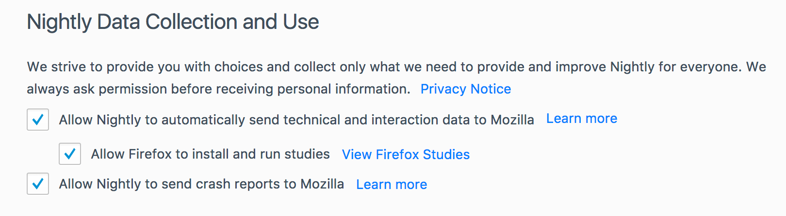

End User Interaction¶
Normandy has a few ways that end-users of Firefox can interact with it.
about:studies¶

Users can view active and complete experiments they’ve participated in on
about:studies. They can also manually end an active study using the
Remove buttons on this page. This includes both preference experiments and
add-on experiments (opt-out-studies).
The top of the page links to a SUMO article explaining studies, as well as to the opt-out preference.
Opt-Out Preference¶
Normandy adds a preference to about:preferences under the Privacy &
Security tab, labeled “Allow Firefox to install and run studies” that
defaults to being checked and links to about:studies. It controls the
app.shield.optoutstudies.enabled preference in about:config.
If unchecked, the user will not be enrolled in any new studies.
The checkbox is linked to the one above it: “Allow Nightly to automatically send technical and interaction data to Mozilla”. If that preference is unchecked, the opt-out preference will also be unchecked and disabled until the user checks the data one again (at which point the opt-out preference becomes checked once more).
Ending a Study¶
The following events can cause a study to end before the add-on uninstalls itself:
The user uninstalls the add-on manually, or while Firefox is closed.
The recipe for the study is disabled; the study will end the next time the user fetches recipes.